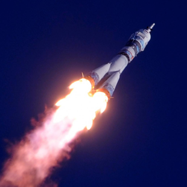
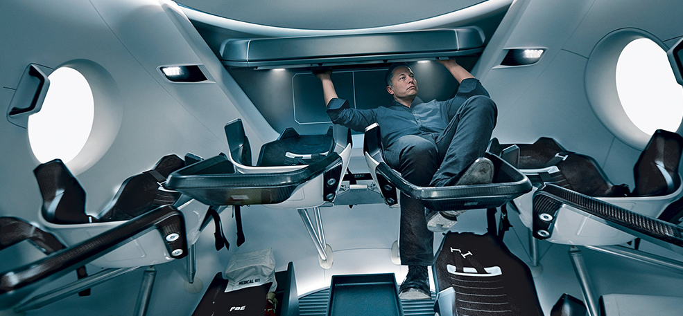

<!DOCTYPE html>
<html>
  <head>
    <meta charset="UTF-8">
    <meta name="viewport" content="width=device-width, user-scalable=no, initial-scale=1.0, maximum-scale=1.0, minimum-scale=1.0, viewport-fit=cover">
    <meta http-equiv="X-UA-Compatible" content="ie=edge">
    <title>Главная</title>
    <link rel="shortcut icon" href="" type="image/ico">
    <link rel="stylesheet" type="text/css" href="dist/style.min.css">
    <script type="text/javascript" src="js/jquery-3.3.1.min.js"></script>
    <script type="text/javascript" src="js/form.js"></script>
    <script type="text/javascript" src="dist/bundle.js"></script>
  </head>
  <body>
    <header>
      <div class="header">
        <div class="container">
          <div class="header_top"><a class="logo" href="#"></a>
            <div class="nav"><span class="nav_text">Меню</span>
              <button class="nav_button" type="button"><span></span></button>
            </div>
          </div>
          <div class="menu">
            <ul class="menu_list">
              <li class="menu_item"><a class="menu_link">Menu 1</a></li>
              <li class="menu_item"><a class="menu_link">Menu 2</a></li>
              <li class="menu_item"><a class="menu_link">Menu 3</a></li>
              <li class="menu_item"><a class="menu_link">Menu 4</a></li>
            </ul>
          </div>
          <div class="header_main">
            <div class="title">
              <h1 class="title_h1">
                <p><span class="title_thin">Пункт назначения:</span><span>Пантеон,</span></p><span class="title_bold">марс</span>
              </h1>
            </div>
            <div class="header_video">
              <div class="video">
                <div class="video_block"></div>
                <div class="video_description">
                  <p>Первый город  на планете Марс  недалеко от горы  Олимп</p>
                </div>
              </div>
            </div>
            <button class="header_scrolldown" type="button"></button>
          </div>
        </div>
      </div>
    </header>
    <section class="features">
      <div class="container">
        <ul class="features_list">
          <li class="feature_item remoteness"><span class="feature_num">4</span><span class="feature_descr">четвёртая планета по удалённости от Солнца</span></li>
          <li class="feature_item num"><span class="feature_num">7</span><span class="feature_descr">седьмая по размерам планета Солнечной системы</span></li>
          <li class="feature_item mass"><span class="feature_num">10,7%</span><span class="feature_descr">массы Земли (ваш вес будет в 3 раза меньше, чем на Земле)</span></li>
          <li class="feature_item satellites"><span class="feature_num">2</span><span class="feature_descr">спутника вместо Луны (как картошка, только больше)</span></li>
          <li class="feature_item height"><span class="feature_num">21&#160;км</span><span class="feature_descr">высота самой высокой горы Марса.</span></li>
          <li class="feature_item temp"><span class="feature_num">+20</span><span class="feature_descr">максимальная температура на поверхности</span></li>
        </ul>
      </div>
    </section>
    <div class="bg bg_main">
      <section class="accommodation">
        <div class="container">
          <div class="accomodation_content">
            <div class="title h2">
              <h2 class="title_h2">Марс. Вспомнить всё</h2>
            </div>
            <div class="accomodation_wrapper">
              <div class="accomodation_info first">
                <div class="title h3">
                  <h3 class="title_h3">Что такое Марс?</h3>
                </div>
                <div class="accomodation_text">
                  <p>Планета Солнечной системы, названа в честь Марса — древнеримского бога войны. Иногда Марс называют «красной планетой» из-за красного оттенка поверхности, придаваемого ей оксидом железа.</p>
                  <p>Особенности планеты — наличие слабой отмосферы, состоящей в основном из улекислого газа, времена года, пылевые бури, сильная эррозия почв.</p>
                </div>
              </div>
              <div class="accomodation_info sec">
                <div class="title h3">
                  <h3 class="title_h3">Где это? Как туда доехать?</h3>
                </div>
                <div class="accomodation_text">
                  <p>Расстояние до Марса — почти 56 миллионов километров. Чтобы преодалеть такое расстояние, нужно лететь на межпланетоном корабле 7-8 месяцев.</p>
                </div>
              </div>
            </div>
          </div>
        </div>
        <div class="accomodation_decor decor">
          <div class="decor_earth"></div>
          <div class="decor_planet"></div>
          <div class="decor_shattle"></div>
        </div>
      </section>
      <section class="idea">
        <div class="container">
          <div class="title h2">
            <h2 class="title_h2">От идеи до реализации</h2>
          </div>
          <div class="idea_content">
            <div class="idea_left">
              <h3 class="idea_subtitle">Илон Маск. Гений или безумец?</h3>
              <div class="idea_text">
                <p>Канадско-американский инженер, предприниматель, изобретатель и инвестор; миллиардер. Основатель компаний SpaceX и X.com, позже переименованной в PayPal. Планирует потратить большую часть накоплений на реализацию своей мечты, а также мечты многих тысяч романтиков, писателей, учёных: создать внеземную цивилизацию.</p>
              </div>
              <blockquote class="idea_blockquote blockquote">Мы должны сделать эту мечту реальностью за наше время жизни. Любой человек, который пожелает отправиться на Марс, должен иметь такую возможность</blockquote>
              <div class="idea_text">
                <p>— заявил Маск на Международной астронавтической конференции в Гвадалахаре (Мексика). Он обосновал необходимость своего проекта вопросом выживания человечества, которое для своего сохранения должно стать «космическим видом».</p>
              </div>
              <div class="idea_text">
                <p>Илон поставил перед собой цель: скоратить стоимость вывода кораблей в космос в 10 раз, что станет первым шагом для человечества в освоении Марса.</p>
              </div>
            </div>
            <div class="idea_right">
              <div class="idea_photo"></div>
            </div>
          </div>
        </div>
      </section>
      <section class="price">
        <div class="container">
          <div class="price_content">
            <div class="price_img"></div>
            <div class="price_info"><span class="price_title">Стоимость перелёта</span>
              <p class="price_description">Высадка двоих астронавтов на Луну обошлась США в 20 млрд. долларов. Маск стремится сократить эту цифру в 20 000 раз, что составит 500 000 долларов на человека.</p>
              <div class="price_promotion"><span class="price_num">$500 k</span><span class="price_goal">и ты на Марсе!</span>
                <button class="price_button" type="button">Я готов лететь</button>
              </div>
            </div>
          </div>
        </div>
      </section>
    </div>
    <section class="journal">
      <div class="container"><span class="journal_title">Подводные камни в масштабах космоса</span>
        <div class="journal_video">
          <div class="video_block"></div>
        </div>
        <div class="journal_tabs">
          <div class="journal_left">
            <ul class="tabs">
              <li class="tabs_title active"><span class="tabs_text">Жить или выживать?</span><span class="tabs_icon"></span></li>
              <li class="tabs_title"><span class="tabs_text">Готовы ли технологии?</span><span class="tabs_icon"></span></li>
              <li class="tabs_title"><span class="tabs_text">Путешествие на грани фантастики</span><span class="tabs_icon"></span></li>
              <li class="tabs_title"><span class="tabs_text">Жизнь на Марсе</span><span class="tabs_icon"></span></li>
            </ul>
          </div>
          <div class="journal_right">
            <div class="tabs_content"><span class="journal_subtitle">Жить или выживать?</span>
              <div class="journal_content">
                <p>Чем отличаются Земля и Марс? Какие условия встретят новых поселенцев?</p>
                <p>Марс холодная и засушливая планета, на которой есть своя атмосфера, на 96% состоящая из углекислых газов, а минимальная температура опускается до -140 градусов по Цельсию. Каждый год по весне на планете случаются пылевые бури, длящиеся от нескольких часов до нескольких месяцев.</p>
                <p>На планете отсутствует магнитное поле, поэтому радиационный фон повышен. А низкая гравитация при длитеьном пребывании на Марсе сделает возвращение на Землю невозможным. Полёт на Марс — билет в один конец с целью создать новую цивилизацию.</p>
              </div>
            </div>
          </div>
        </div>
      </div>
    </section>
    <section class="conditions">
      <div class="container"><span class="conditions_title">Организация жизни в колонии</span>
        <div class="conditions_tabs">
          <div class="conditions_left">
            <div class="conditions_line"></div>
            <ul class="tabs">
              <li class="tabs_title accomodation active"><span class="tabs_icon"></span>
                <div class="tabs_wrapper"><span class="tabs_text">Проживание</span></div>
              </li>
              <li class="tabs_title security"><span class="tabs_icon"></span>
                <div class="tabs_wrapper"><span class="tabs_text">Безопасность</span></div>
              </li>
              <li class="tabs_title science"><span class="tabs_icon"></span>
                <div class="tabs_wrapper"><span class="tabs_text">Научная работа</span></div>
              </li>
              <li class="tabs_title fun"><span class="tabs_icon"></span>
                <div class="tabs_wrapper"><span class="tabs_text">Развлечения</span></div>
              </li>
              <li class="tabs_title garden"><span class="tabs_icon"></span>
                <div class="tabs_wrapper"><span class="tabs_text">Садоводство</span></div>
              </li>
            </ul>
          </div>
          <div class="conditions_right">
            <div class="condition_img"></div>
            <div class="condition_subtitle"><span>Проживание</span></div>
            <div class="condetion_text">
              <p>В основе жилых помещений лежат надувные компоненты — спальня, рабочая зона, гостиная, парник для выращивания зелени — 50 м2 на человека. Благодаря этим компонентам, колонисты смогут принять душ, приготовить свежую пищу, носить обычную одежду. Весь комплекс соединен сетью ходов.</p>
            </div>
            <button class="condition_btn" type="button">Подробнее</button>
          </div>
        </div>
      </div>
    </section>
    <footer>
      <div class="footer">
        <section class="order"></section>
        <section></section>
      </div>
    </footer>
  </body>
</html>